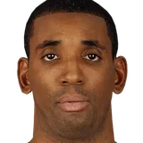

Played 2 seasons for 2 teams; his teams went 24–51 in his games.
Jump to: Record by opponent · Season by season · Teammate help
Compare Kenny Satterfield with…
Final NBA finish, season by season
Title Finals Other playoffs Missed playoffs. #1 = champion; the dashed line is last place that season. Each point opens that season's final standings.
All 29 teams ranked in 2001-02, his best finish (#26)Teammate help
Career
Career records (W–L, W − L, with and without) include 2026-27 games through Nov. 25, 2026; season counts and finishes are through 2025-26. Each card opens its board in the same scope. How we count.

Latest completed seasons
Season by season
Newest first; every header sorts. Final NBA finish is the team's rank among all teams that season (#1 = champion) and opens that season's standings. "Without him" uses the team-season window; the span line counts only the games between his first and last game for the team.
| 2002-03 | #28 of 29 | 17–65 20.7% | Missed playoffs | 22 of 82 | 4–18 18.2% | 2–4 33.3%span: 2–1, gap −48.5 | −15.2 | |
| 2002-03 | #7 of 29 | 48–34 58.5% | Lost conf semis 2–4 | 17 of 82 | 9–8 52.9% | 23–17 57.5%span: 7–6, gap −0.9 | −4.6 | |
| 2001-02 | #26 of 29 | 27–55 32.9% | Missed playoffs | 36 of 82 | 11–25 30.6% | 16–30 34.8%span: 9–20, gap −0.5 | −4.2 |
On/off, starts and close games
From the lineup data, 1996-97 on. On/off is net points per 100 possessions with him on the floor minus off, a different unit from the win-rate gaps. Started and off the bench are team records in those games; close games are those within 5 points in the last 5 minutes with him on the floor.
| 2002-03 | +7.6 | 3–3 50.0% | 1–15 6.2% | 2–4 33.3% | |
| 2002-03 | −16.0 | N/A | 9–8 52.9% | 1–1 50.0% | |
| 2001-02 | +6.1 | 2–2 50.0% | 9–23 28.1% | 2–1 66.7% |
Teammate help by season
Help this season = Teammates Score points for honors won that season by teammates who shared a game with him, with every teammate that adds to it. Only honors won in that same season count. How help works.
- 2002-03
 Denver
Denver
 Nenê All-Rookie 1st0.2521 g
Nenê All-Rookie 1st0.2521 g
Help this season: 0.25 = 0.25 Nenê
Other teammates (no honors that season): Junior Harrington 22 g, Nikoloz Tskitishvili 22 g, Donnell Harvey 22 g, James Posey 22 g, Mark Blount 22 g, Ryan Bowen 21 g, Juwan Howard 19 g, Rodney White 17 g, Chris Andersen 14 g, Chris Whitney 13 g, Vincent Yarbrough 7 g, Predrag Savovic 5 g
- 2002-03
 Philadelphia
Philadelphia
 Allen Iverson All-NBA 2ndAll-Star417 gEric Snow All-Def 2nd0.517 g
Allen Iverson All-NBA 2ndAll-Star417 gEric Snow All-Def 2nd0.517 g
Help this season: 4.5 = 4 Allen Iverson + 0.5 Eric Snow
Other teammates (no honors that season): Aaron McKie 16 g, John Salmons 16 g, Brian Skinner 16 g, Efthimios Rentzias 15 g, Derrick Coleman 15 g, Keith Van Horn 15 g, Kenny Thomas 13 g, Greg Buckner 13 g, Todd MacCulloch 7 g, Monty Williams 3 g
- 2001-02DenverHelp this season: 0, no honored teammate
Record against each opponent
Regular season, through 2025-26 (2026-27 games not included): 75 games, 24–51, against 29 franchises.
Grouped by franchise (named as today); game lists keep each team's name that season. Filters and the tab are kept in the URL, so a filtered view can be shared.
| Games list | |||||||
|---|---|---|---|---|---|---|---|
| 6 | 1–5 | 16.7% | −4 | N/A | 2001-02 to 2002-03 | ||
| 6 | 2–4 | 33.3% | −2 | N/A | 2001-02 to 2002-03 | ||
| 5 | 2–3 | 40.0% | −1 | N/A | 2001-02 to 2002-03 | ||
| 5 | 0–5 | 0.0% | −5 | N/A | 2001-02 to 2002-03 | ||
| 4 | 1–3 | 25.0% | −2 | N/A | 2001-02 to 2002-03 | ||
| 4 | 2–2 | 50.0% | 0 | N/A | 2001-02 to 2002-03 | ||
| 4 | 2–2 | 50.0% | 0 | N/A | 2001-02 to 2002-03 | ||
| 4 | 1–3 | 25.0% | −2 | N/A | 2001-02 to 2002-03 | ||
| 3 | 0–3 | 0.0% | −3 | N/A | 2001-02 to 2002-03 | ||
| 3 | 3–0 | 100.0% | +3 | N/A | 2001-02 to 2002-03 | ||
| 3 | 2–1 | 66.7% | +1 | N/A | 2001-02 to 2002-03 | ||
| 3 | 0–3 | 0.0% | −3 | N/A | 2001-02 to 2002-03 | ||
| 2 | 0–2 | 0.0% | −2 | N/A | 2002-03 | ||
| 2 | 1–1 | 50.0% | 0 | N/A | 2001-02 to 2002-03 | ||
| 2 | 1–1 | 50.0% | 0 | N/A | 2001-02 to 2002-03 | ||
| 2 | 1–1 | 50.0% | 0 | N/A | 2001-02 to 2002-03 | ||
| 2 | 1–1 | 50.0% | 0 | N/A | 2001-02 to 2002-03 | ||
| 2 | 0–2 | 0.0% | −2 | N/A | 2001-02 to 2002-03 | ||
| 2 | 1–1 | 50.0% | 0 | N/A | 2001-02 to 2002-03 | ||
| 2 | 0–2 | 0.0% | −2 | N/A | 2001-02 | ||
| 1 | 0–1 | 0.0% | −1 | N/A | 2001-02 | ||
| 1 | 0–1 | 0.0% | −1 | N/A | 2001-02 | ||
| 1 | 1–0 | 100.0% | +1 | N/A | 2002-03 | ||
| 1 | 0–1 | 0.0% | −1 | N/A | 2002-03 | ||
| 1 | 1–0 | 100.0% | +1 | N/A | 2001-02 | ||
| 1 | 1–0 | 100.0% | +1 | N/A | 2001-02 | ||
| 1 | 0–1 | 0.0% | −1 | N/A | 2001-02 | ||
| 1 | 0–1 | 0.0% | −1 | N/A | 2002-03 | ||
| 1 | 0–1 | 0.0% | −1 | N/A | 2002-03 |
Rows add up to his career record in his games. A playoff series counts when he played in it; early round-robin games show as games only. How we count.
Arrival and departure
Team wins per 82 games the season before he arrived vs his first season there, and his last season vs the season after he left. He leaves a team only when his next season with games is for another team (or he never plays again); whole seasons he missed and came back from are one "Missed" row with the team's record without him. Per 82 so short seasons compare fairly. These are team records, not a measure of what he did.
| Left | after 2002-03 | 2002-03: 17–65 17.0 per 82 | 2003-04: 43–39 43.0 per 82 without him | +26.0 wins | |
| Left | after 2002-03 | 2002-03: 48–34 48.0 per 82 | 2003-04: 33–49 33.0 per 82 without him | −15.0 wins | |
| Arrived | 2002-03 | 2001-02: 43–39 43.0 per 82 | 2002-03: 48–34 48.0 per 82 | +5.0 wins | |
| Debut | 2001-02 | 2000-01: 40–42 40.0 per 82 | 2001-02: 27–55 27.0 per 82 | −13.0 wins |
Seasons split between teams
Each team's record before his first game for it, inside his window (games with and without him) and after his last game, in the seasons he played for two or more teams.
| 2002-03 | Oct. 30, 2002 to Dec. 16, 2002 | N/A | 6–22 21.4% | 11–43 20.4% | 22 | |
| 2002-03 | Dec. 28, 2002 to March 2, 2003 | 16–9 64.0% | 32–25 56.1% | N/A | 17 |
Best duos
Team record in regular-season games both played, top 10 by win %, at least 50 games together.
- Ryan Bowen 15–36 29.4%
 James Posey
13–38 25.5%
James Posey
13–38 25.5%
With and without his teammates
His 12 teammates with the most regular-season games together. "Together" is the team's record in the games both played for it; "Without him" is the team's record in the games Kenny Satterfield played for that team while the teammate was on it (between the teammate's first and last game for the team, the appearance span) and the teammate did not play. Fewer than 20 games without him: no gap. Games through Nov. 25, 2026. How we count.
- Ryan BowenDenver 2001-02 to 2002-03
- Together
- 15–36 29.4%
- Without him
- 0–7 0.0%
- Gap
- Too few games without him
- James PoseyDenver 2001-02 to 2002-03
- Together
- 13–38 25.5%
- Without him
- 2–5 28.6%
- Gap
- Too few games without him
- Donnell HarveyDenver 2001-02 to 2002-03
- Together
- 12–31 27.9%
- Without him
- 0–2 0.0%
- Gap
- Too few games without him
- Juwan HowardDenver 2001-02 to 2002-03
- Together
- 9–30 23.1%
- Without him
- N/A N/A
- Gap
- Too few games without him
- Calbert CheaneyDenver 2001-02
- Together
- 11–25 30.6%
- Without him
- N/A N/A
- Gap
- Too few games without him
 Chris AndersenDenver 2001-02 to 2002-03
Chris AndersenDenver 2001-02 to 2002-03- Together
- 12–22 35.3%
- Without him
- 3–21 12.5%
- Gap
- 22.8 points lower
- Zendon HamiltonDenver 2001-02
- Together
- 10–24 29.4%
- Without him
- 1–1 50.0%
- Gap
- Too few games without him
 Voshon LenardDenver 2001-02
Voshon LenardDenver 2001-02- Together
- 10–23 30.3%
- Without him
- 0–1 0.0%
- Gap
- Too few games without him
 George McCloudDenver 2001-02
George McCloudDenver 2001-02- Together
- 8–21 27.6%
- Without him
- 2–3 40.0%
- Gap
- Too few games without him

Mark BlountDenver 2002-03- Together
- 4–18 18.2%
- Without him
- N/A N/A
- Gap
- Too few games without him
- Nikoloz TskitishviliDenver 2002-03
- Together
- 4–18 18.2%
- Without him
- N/A N/A
- Gap
- Too few games without him
- Junior HarringtonDenver 2002-03
- Together
- 4–18 18.2%
- Without him
- N/A N/A
- Gap
- Too few games without him